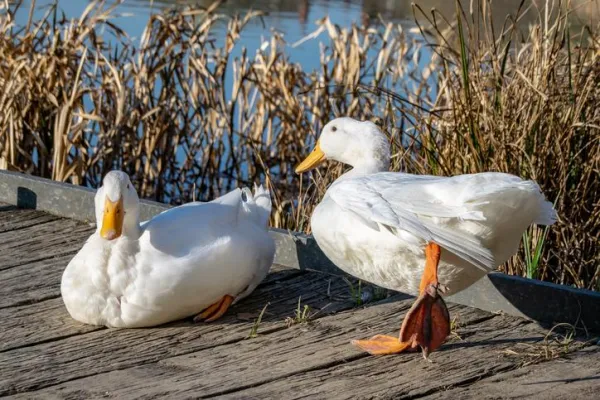
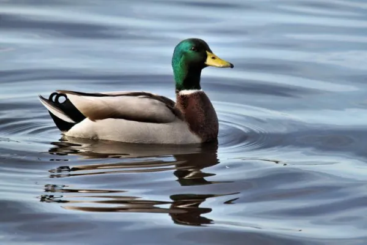
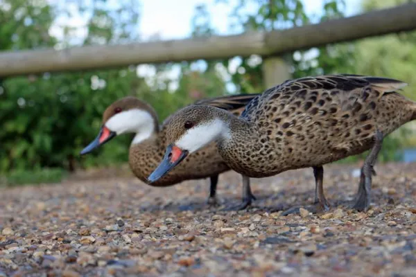

| Index | Nom des races | Description | photo | |
|---|---|---|---|---|
| 1 | Canard domestique (Anas platyrhynchos domesticus) |
la sous-espèce Anas platyrhynchos domesticus est connue populairement comme canard domestique. |
 | |
| 2 | Canard colvert (Anas platyrhynchos) |
Le canard colvert , connu également comme canard mallard, est l'espèce à partir de laquelle a été développée le canard domestique. C'est un oiseau migrateur d'abondante distribution, qui habite les zones tempérées du nord de l'Afrique, d'Asie, d'Europe et d'Amérique du Nord, d'où il migre vers les Caraïbes et l'Amérique Centrale. Il a également introduit en Australie et en Nouvelle Zélande. |
 | |
| 3 | Canard colvert (Anas platyrhynchos) |
Le canard des Bahamas, connu également sous le nom de Pilet des Bahamas, est une race de canard native du continent américain, elle se distingue à simple vue pour son dorsal tacheté et son ventre aux nombreuses taches noires. A l'inverse de la majorité des races de canards, le canard des Bahamas vit près des étangs et des marais d'eau saumâtres, bien qu'ils puissent aussi s'adapter à la vie en eau douce. |
 | |
| 4 | TPT | le plus rare des canards |
||